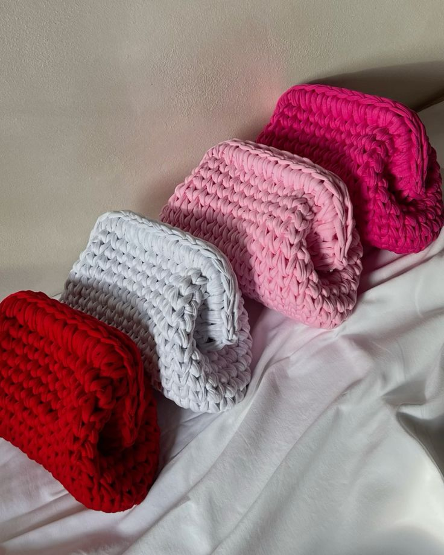
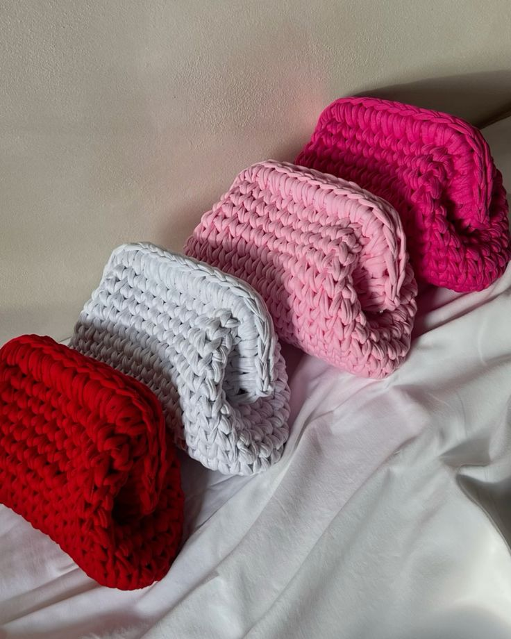

Inicio
Hola, mi nombre es Fiorella, este es mi primer portfolio hecho con codigo en HTML y CSS.
Aca vas a saber un poco de mi, mi emprendimiento y algunas cositas que me gustan.
Sobre Mí
Estudio laboratorio clinico en la facultad de Medicina y Desarrollo web en JaP. Trabajo en un call center de una aseguradora.
Laboratorio clinico es una carrera hermosa, es una licenciatura, este año me tome un break.
Desarrollo web es algo que me da una curiosidad enorme y cada vez descubro mas cosas que estan demas, como todo se entrelaza y conunas lineas de codigo podes creear sitios y de todo tipo de paginas, me esta gustando mucho lo que voy aprendiendo aunque se me esta haciendo dificil ya que no tengo ningun tipo de base de lo que es la programacion.
Algunas de mis cosas favoritas son el chocolate, la nutella, color violeta y el rosado, me gusta el deporte, me gusta tejer, me interesa mucho lo que es el cuidado del cabello y el cuidado de la salud.
Mi Emprendimiento
Tengo un emprendimiento que esta en pañales aun de crochet, se llama "Crochella". De momento estoy realizando cositas con la tecnica en trapillo.
EL trapillo son restos de tela, por lo general de algodon o de lycra, de las industrias de tela que reutilizan esos restos y los convierten en conos de trapillo como si fuera un hilo pero de tela de algodon o lycra y con eso podes realizar muchas cositas a crochet.
Les dejo en la seccion de galeria unas fotos de lo que se puede hacer.
Galería
 


Contacto
Puedes contactarme en sosabfiorella@gmail.com